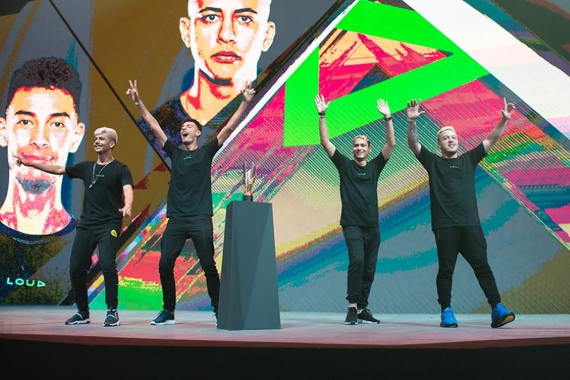
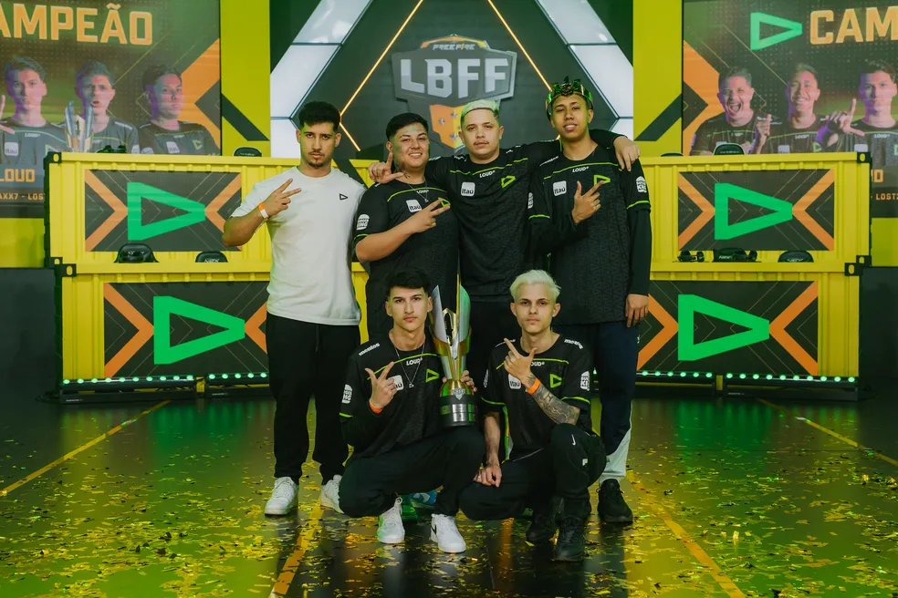

LOUD NO FREE FIRE
INICIO
A loud deu início ao seu projeto de free fire em 2019, montando seu time para participar da elite de competições nacionais e internacionais. Após montar a sua primeira equipe começaram a se destacar nos campeonatos chegando em finais e conquistando algumas delas. A sua primeira line-up era formada por: Victor“Coringa”Augusto, Marcos“Mob”Dias, Vinicius”ViniZx”Mariano e Samuel“Braddock”Borges.

Pimeiro grande titulo
A loud passou por algumas fases difíceis sem ganhar nada de relevante. Então a pedido da torcida foram feitas reformulações até conseguirem se consagrar campeões de seu primeiro título em 2020. A copa américa de Free Fire, com seu time formado por Vinicius ”ViniZx” Mariano, Samuel “Braddock” Borges, William “Will” Moura e Heverton “Shariin”.
Queda e recuperação
Logo após o seu primeiro título de grande expressão a equipe esmeraldina, passou por uma seca de títulos, sendo quase rebaixada na LBFF “Liga Brasileira de Free Fire”. Logo em seguida a loud passou por uma grande reformulação novamente. Esse novo time era composto por Cauan ”Cauan7” Santos, Luan “Lost” Souza, William “Will” Moura, Ariano “KronosX” Ferreira, Pedro "Brabox" Assunção, Willian "Noda" de Oliveira. Em 2022 sem o jogador Will, a loud se consagra campeã da LBFF e em 2023 a loud se consagra bi campeã da LBFF, com a saída de Kronos e a introdução de Leonardo “Mexico” e Victor “Draxx7” Borges. Em 2024 com a saída de Noda e Mexico, o jogador Yago "Yago" Vinicius.
Time atual
- Yago
- Cauan7
- Draxx7
- Lost
- tecnico: Frois
Titulos
- Titulos oficiais
- Copa America 2020
- LBFF 2022
- LBFF 2023
- Titulos de Campeonatos Amador
- Copa GWL Mobile 2023
- Star Cup 2023
- The Citzens Elite 2023
- Liga Talents Mobile 2023
- Super Liga 2024
- Global Games Mobile
- Copa GWL Mobile 2024